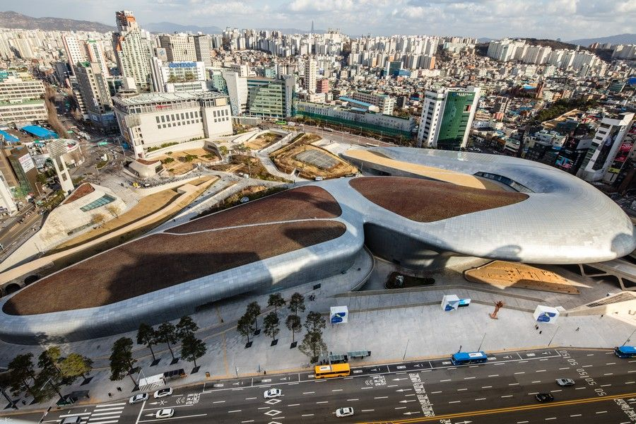

남산 케이블카
서울특별시 중구 회현동에서 서울특별시 중구 예장동 남산 정상 부근까지를 잇는 케이블카이다.
명동역 인근에 위치해 있으며, 대한민국 최초의 여객용 케이블카로 서울의 대표적인 관광 명소다. N서울타워로 가는 사람들이 많이 이용한다.
평점 4.35/5

국립극장
1950년 4월 29일 설립된 아시아 최초의 국립 극장이다.
처음에는 현재 서울특별시의회 의사당 건물인 부민관에서 개관했고, 6.25 전쟁 이후 피난수도였던 경상남도 부산시에 갔다가 서울 수복 이후에는 부민관이 국회의사당이 되었으므로 시공관(현 명동예술극장)을 이용했다. 그러다가 박정희 대통령의 지시로 장충동에 새 국립극장 건물이 1973년 완공되어 현 위치로 이전했다.[3] 해당 건물 시공은 삼환기업이 맡았다.
평점 4.35/5

안중근 의사 기념관
서울특별시 중구 남산공원에 있는 역사기념관.
사단법인 안중근의사숭모회가 관리/운영하고 있으며 1970년 10월 26일 안중근 의사 순국 60주년을 기념하여 박정희 대통령의 지시와 국민의 모금으로 설립되었다. 2010년 10월 26일 이전에 있었던 한옥모습의 구관(舊館)을 철거하고 현재의 자리에 신관을 설립하여 안중근 의사 하얼빈 의거 101주년을 기념하여 개장하였다.
평점 4.35/5

남산골한옥마을
서울특별시 중구 필동 퇴계로에 위치해 있는 한옥 마을. 1998년에 공식 개장하였다.
본래 수도방위사령부가 주둔해 있던 군사 보호 구역이었으나, 1989년 서울특별시가 남산 제모습 찾기 운동의 일원으로 수방사와의 합의하에 이 부지를 매입하게 되었고 군사 보호 구역에서 해제되면서 서울특별시 민속 자료 및 한옥 5개동을 복원하여 1998년 공식 개장하였다.
평점 4.35/5

동대문디자인플라자
서울특별시 중구의 전시장 및 쇼핑몰. 영국의 건축가 자하 하디드가 설계했다
홈페이지에 따르면 세계 최대 규모의 3차원 비정형 건축물이라고 한다. 2007년 동대문운동장이 철거된 이후 동대문운동장에 대한 개발정책의 일원으로 세워지게 되었으며 2008년에 착공하여 6년만인 2014년 3월에 개장하였다. 현재 운영기관은 서울시 출연기관인 서울디자인재단이며 2009년에 먼저 개장한 동대문역사문화공원과 더불어 총 관리를 하고 있다.
평점 4.35/5
동대문역사문화공원
서울특별시 중구 을지로 281 (을지로7가) 소재 공원.
1926년 조선총독부가 경성운동장을 세우게 되면서 축구장과 야구장을 갖추었던 곳이었으며 해방 후에는 서울운동장으로 이름을 바꿨다가 1984년 잠실에 종합운동장이 세워지면서 이름을 동대문운동장으로 바꾸었다.
평점 4.35/5

평화시장
서울특별시 중구 을지로6가를 중심으로 흥인지문 및 청계천 지역에 밀집한 의류 도매시장.
1970년 22세의 청년 전태일은 평화시장에서 재단사로 근무하다가 열악한 노동환경에 대한 울분으로 평화시장 앞에서 근로기준법 법전을 들고 분신했다.
평점 4.35/5

남대문시장
서울특별시 중구 회현동 숭례문 앞에 위치해 있는 서울, 더 나아가 한국 최대의 재래시장.
시장 이름은 숭례문의 별칭인 남대문에서 따왔으며, 숭례문 앞과 마주하고 있다는 시장이라고 하여 붙어졌다. 남대문의 원래 명칭은 숭례문이지만 '숭례문시장'이라는 이름으로 부르는 일은 거의 없다.
평점 4.35/5

명동거리
서울특별시 중구에 있는 행정동, 법정동이자 이곳에 위치한 상권을 이르는 명칭.
각종 쇼핑 상권이 극도로 발달해있고, 식당이나 술집 등도 군데군데 분포해 있다.
평점 4.35/5

서울특별시청
서울특별시의 행정을 총괄하는 기관이자 그 기관이 입주한 건물. 줄여서 서울시청이라고도 한다.
주소는 서울특별시 중구 세종대로 110이다. 행정동 상으로는 명동에 속해있다.
평점 4.35/5

서울스퀘어
서울역 건너편 남대문경찰서 옆에 있는 사무용 건물이다.
본래는 대우그룹의 본사로서 대우센터빌딩으로 불리었다. 지금도 이 곳을 대우빌딩이라고 부르는 사람들이 많다. 높기로 유명한 광화문 세종대로네거리의 교보타워와 쌍벽을 이루는 정도. 당시 인근 정류장 명칭도 서울역앞 대우빌딩이었다. 그러다가 대우그룹이 해체되면서 서울역앞 대우건설빌딩으로 바뀌었다가, 이후 리모델링을 거쳐 현재의 명칭으로 정착되었다. 한편 서울스퀘어 앞에는 서울역과 서울역버스환승센터가 위치하여 교통의 요충지이기도 하다
평점 4.35/5

덕수궁
조선시대의 궁궐. 원래 왕가의 별궁인 명례궁이었으나, 임진왜란 직후 행궁으로써 정궁 역할을 했으며, 광해군 때 정식 궁궐로 승격 경운궁이 되었고 대한제국 때는 황궁(皇宮)으로 쓰였다. 1907년 고종 퇴위, 순종 즉위 이후 이름이 덕수궁으로 바뀌었다. 현재 서울특별시 중구 세종대로 99 (정동) 서울특별시청 건너편에 위치해 있다.
평점 4.35/5

청계천
서울특별시의 하천. 총 길이 10.84㎞, 유역 면적 59.83㎢이다.
서울의 도시개발 역사를 상징하는 하천으로도 유명하다. 전근대시기 자연하천에서 시작하여 여러 개천사업을 거쳐 직선화와 복개 작업이 이루어졌고, 청계고가도로가 건설되었을 당시에는 아예 사라졌다가 이후 복원이 이루어져 자연하천과 인공하천이 혼합된 형태의 하천으로 재탄생되었다
평점 4.35/5

추천맛집
원조 남산 돈가스
평점 3.1/5
서울특별시 중구 소파로 107
돈가스

우래옥
평점 4.2/5
서울특별시 서울 창경궁로 62-29 (주교동)
냉면

패스트리부티크
평점 4.7/5
서울특별시 중구 동호로 249 서울신라호텔 1F
베이커리